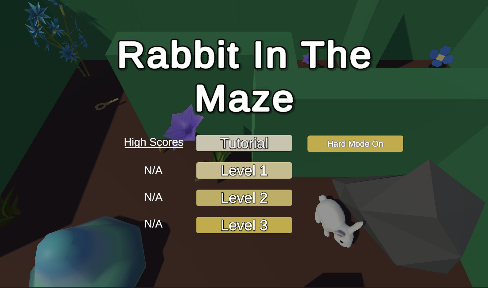
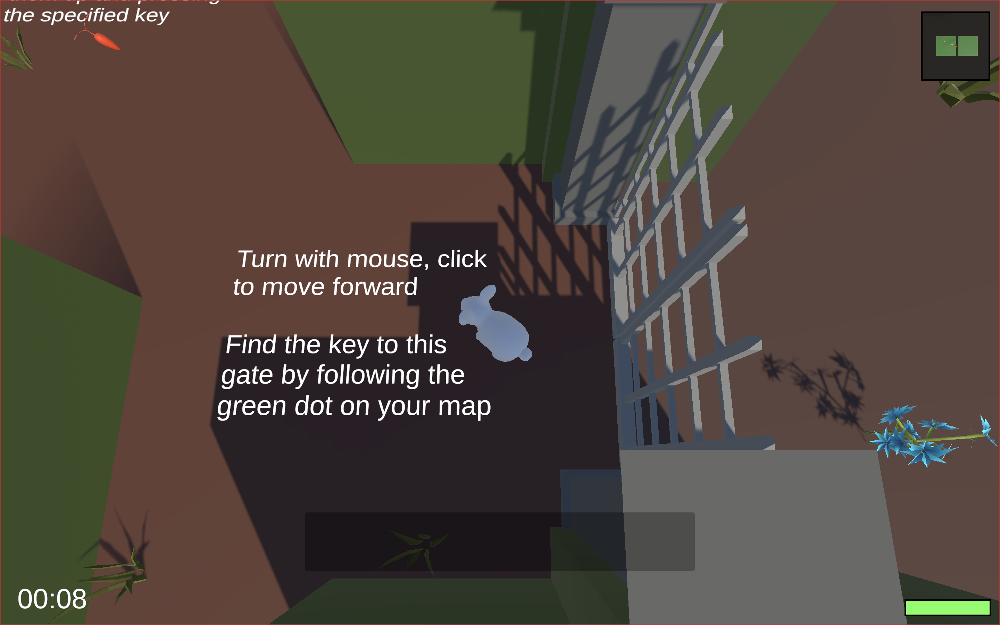
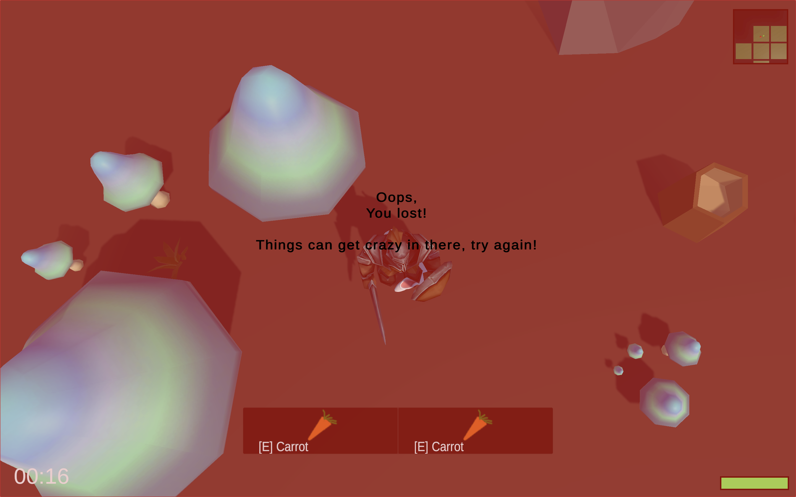
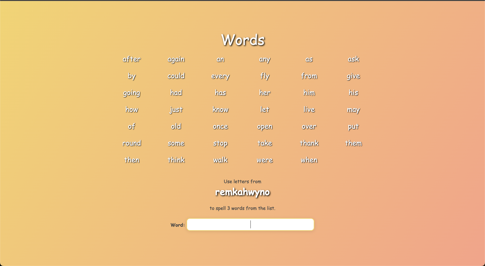
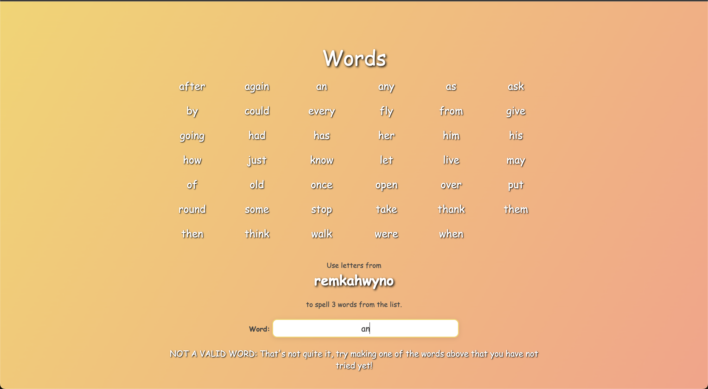
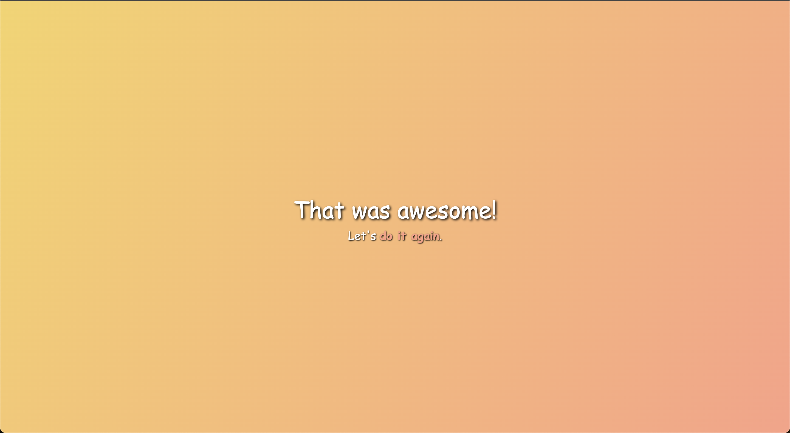

Hi, I'm Ellison Largent
Computer Science Student | Software Engineer | Problem Solver
Computer Science Student | Software Engineer | Problem Solver
I am a dedicated Computer Science senior at the University of Oregon with a passion for creating innovative technological solutions. Proficient in full-stack web development, game design, and solving complex programming challenges, I bring a blend of technical expertise and creative problem-solving to every project.

Full-stack web application enabling recipe discovery and meal planning. Implemented user authentication, recipe management, and shopping list generation using a modern tech stack.
(Double-click to expand details)


Let's cook is a web app in which users can find new recipes or look through their favorites in order to streamline the meal planning process. Also features an accompanying shopping list for the meal plan where all the ingredients for recipes are stored in a grocery list.
I made this project along with three hours for anyone who struggles to pick what to make for their meals, and want an all in one solution for meal planning. The goal of this project was to create a replacement for cookbooks, and recipe sites that can overwhelm users.
My team and I developed this web app using docker, flask, react, mysql, sqlalchemy, and a lot of teamwork. Throughout the project developement we had regular meetings utilizing agile methodology where we wrote up our ConOps and user requirements, planning out in detail how we would execute a larger scale project. We cleaned a recipe dataset and used that as our basis with the hopes that one day we might have the time to get back together and work on a feature to allow users to add their own recipes. This project taught me a lot about time management, working with others on a project, version control and the importance of branching, as well as how much goes into web applications.

Developed a Unity game where a rabbit navigates procedurally generated mazes. Implemented progressive difficulty, pathfinding, and obstacle avoidance using C#.
(Double-click to expand details)

Rabbit In The Maze is a Unity game developed collaboratively. In this game, players control a rabbit trying to escape randomly generated mazes of increasing difficulty. The objective is to find the key to unlock the exit in each level. The game features progressively challenging mazes, requiring players to navigate through complex paths and avoid obstacles.
The inspiration for Rabbit In The Maze came from classic maze games and the desire to create an engaging, procedurally generated experience. We wanted to combine the charm of an Alice in Wonderland style game with the challenge of navigating through unpredictable environments. The idea of increasing difficulty was inspired by the concept of growth and learning, mirroring the journey of a player as they become more skilled at the game.
Developing Rabbit In The Maze was an enriching experience that taught us valuable lessons in game design, procedural generation, and collaborative development. One of the main challenges we faced was balancing the difficulty progression to ensure the game remained challenging yet fair. This project enhanced our skills in Unity development, algorithm design for maze generation, and user experience considerations. Looking back, we're proud of creating an engaging game that offers a unique experience with each playthrough, thanks to its randomized nature.

Created an interactive web-based anagram game with a Flask backend, leveraging AJAX and MongoDB for real-time user input processing and feedback.
(Double-click to expand details)

The Anagram Web Game is a simple yet engaging webpage game where users are presented with a list of words and a jumble of letters. The objective is to form three words from the list using the provided letters. The game processes user input in real-time, providing immediate feedback after each keystroke. Correct words are displayed at the bottom of the screen, and the game concludes when three valid words are found, redirecting the user to a success page.
The inspiration for this project came from a desire to create an interactive, educational game that enhances vocabulary and problem-solving skills. Anagrams have long been a popular word puzzle, and I wanted to bring this classic concept into a modern, web-based format. The real-time feedback mechanism was inspired by the need for an engaging user experience that keeps players motivated and informed throughout the gameplay.
Developing the Anagram Web Game was an excellent opportunity to deepen my understanding of web technologies and user interaction design. One of the main challenges was implementing the real-time word validation system, which required careful consideration of both front-end and back-end processes. This project significantly improved my skills in AJAX, Flask, JavaScript, and jQuery. It also taught me valuable lessons about creating intuitive user interfaces and managing game state in a web environment. Looking back, I'm proud of creating a game that is both fun and educational, demonstrating the potential of web technologies in interactive learning experiences.
Assisted students in labs and projects for web programming courses and collaborated with professors and fellow assistants to provide effective support.
Supported professors by grading assignments and providing constructive feedback to students.
Minor in Business Administration. Recognized with the University of Oregon Presidential Scholarship (2021 – Present).
Get in touch via email, phone, or connect on LinkedIn and GitHub.